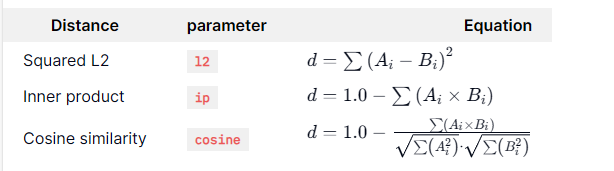

Chroma向量数据库实战讲义
Chroma向量数据库完全解析
Chroma介绍
什么是向量数据库
向量数据库是一种专门用于存储和检索向量数据的数据库系统。 它通过存储文档的语义向量表征，实现了快速高效的相似性搜索，确保了系统能够及时访问最新、最相关的信息源。
不同于传统数据库存储结构化数据，向量数据库存储的是向量形式的数据，这些向量通常是将文本等非结构化数据通过embedding模型编码而成。在人工智能、尤其是机器学习和深度学习领域，数据往往会被表示为高维向量。这些向量代表了数据的特征，可以是图像、文本或者任何类型的数据。向量数据库通过索引和检索机制来管理和利用这些高维向量数据，从而加快检索速度并提高检索的准确性。特别是在执行相似性搜索时，如查找与给定图像最相似的图像或找到与特定文本段落语义相近的文本。
向量数据库和传统数据库的对比
下面我们分别从数据存储结构、数据查询方式、应用场景等多个方面来对比两种数据库，加深对向量数据库的理解。
- 数据存储结构
| 特性 | 传统数据库 | 向量化数据库 |
| 数据结构 | 表格形式，行和列 | 向量形式，高维度空间中的点 |
| 数据类型 | 结构化数据（数值、文本、日期等） | 非结构化数据（文本、图像等）转化为向量 |
| 索引方式 | 基于主键、外键和索引的关系型结构 | 基于向量的索引，通常使用如ANN（Approximate Nearest Neighbors）技术 |
- 数据查询方式
| 特性 | 传统数据库 | 向量化数据库 |
| 查询语言 | SQL | 向量查询，基于相似度度量（如余弦相似度、欧氏距离等） |
| 查询效率 | 对于结构化数据查询效率高 | 对于相似性搜索查询效率高 |
| 查询结果 | 精确匹配 | 近似匹配，返回最相似的向量 |
- 应用场景
| 特性 | 传统数据库 | 向量化数据库 |
| 常见应用 | 事务处理、报表生成、记录管理 | 生成AI知识检索、语义搜索、个性化推荐等需要向量相似性计算的领域 |
| 数据类型 | 适用于明确和结构化的数据 | 适用于非结构化和多维数据（如文本、图像） |
- 性能和扩展性
| 特性 | 传统数据库 | 向量化数据库 |
| 性能优化 | 索引优化、查询优化、缓存 | 向量索引优化（如HNSW、LSH）、并行计算 |
| 扩展性 | 垂直扩展（增加硬件资源）和水平扩展（分片） | 水平扩展（分布式向量数据库） |
| 数据一致性 | 强一致性，通过事务和锁机制保证 | 通常为最终一致性，特别是在分布式系统中 |
- 设计和管理
| 特性 | 传统数据库 | 向量化数据库 |
| 数据模式 | 预定义的模式（Schema） | 无需预定义模式，灵活性高 |
| 数据管理 | 需要严格的模式管理和约束 | 更加灵活，适合处理变化频繁的数据 |
| 数据插入和更新 | 受限于表结构，需要考虑约束和索引 | 向量更新相对简单，但需要重新计算索引 |
总结
- 传统数据库适合处理结构化数据，提供精确匹配查询，广泛应用于事务处理和数据分析场景。
- 向量化数据库则适合处理非结构化数据，提供相似性查询，广泛应用于需要高效信息检索、推荐和自然语言处理的场景。
通过对比可以看出，虽然传统数据库和向量化数据库在结构、查询方式和应用场景上有很大的不同，但它们各自擅长的领域和用途相辅相成，能够满足不同类型的数据处理需求。
向量数据库的原理
向量数据库的核心在于其向量索引技术。 这些技术利用向量空间的几何性质来优化存储结构和检索过程，当进行数据检索时，向量数据库通过计算查询向量与数据库中存储向量之间的相似度来找到最相似的结果，向量数据库的工作原理包括以下几个部分：
1.数据导入与向量化
首先需要将非结构化数据如文本、图像等通过embedding模型编码转换为向量形式。常用的embedding模型有Word2Vec、BERT、GPT等。每个数据项都会被映射到一个固定维度的向量空间中。
{kind=link}
下面是对常见的数据向量化模型的简单介绍：
| 向量化模型 | 介绍 |
| Word2Vec | Word2Vec是一种流行的词嵌入模型，由Google推出。它包含CBOW和Skip-gram两种模型架构，通过神经网络对上下文进行建模，将词映射为固定维度的词向量。这些词向量能较好地捕捉词与词之间的语义和句法关系。Word2Vec广泛用于自然语言处理任务中。 |
| GloVe | GloVe（Global Vectors）是斯坦福大学提出的基于词共现统计信息训练词向量的模型。它利用词与词之间的共现矩阵，通过矩阵分解得到词向量表示。GloVe相比Word2Vec，能更好地捕捉词的全局统计信息。 |
| GPT | GPT是OpenAI开发的生成式预训练模型，采用Transformer架构并在大规模文本语料上训练。GPT除了输出文本表示向量，还能直接生成自然语言。 |
| BERT | BERT（Bidirectional Encoder Representations from Transformers）是一种基于Transformer的预训练语言模型，由Google开发。BERT通过掩码语言模型和下一句预测两个任务进行预训练，输出上下文化的词/句向量表示，在各种自然语言任务中表现卓越。 |
| ViT | ViT（Vision Transformer）是一种将Transformer应用到图像领域的模型，由Google提出。ViT将图像分割为多个patches，并将这些patches线性投影到向量空间，然后输入Transformer进行建模，最终生成图像级特征向量。 |
| Speech2Vec | Speech2Vec是语音嵌入模型的一种，由Speech团队提出。它采用迁移学习的思路，利用预训练的BERT模型将音频数据投影到与文本相同的向量空间,获得语音片段的语义向量表示。 |
2.向量存储与索引
数据经过向量化后，需要被高效存储和索引,以支持快速向量相似度查询。向量数据库通常采用以下数据结构：
不同的向量库采用不同的索引算法组合，以平衡查询精度、查询性能、内存占用等指标。
平面存储：将向量按顺序存储在磁盘或内存中,查询时需要线性扫描对比,效率低下。
树形索引：使用KD树、球树等树形结构组织向量,实现基于空间划分的向量索引,查询时可剪枝提高效率。
哈希索引：通过局部敏感哈希等将高维向量映射到低维哈希值,对哈希值构建倒排索引用于快速筛选候选向量集。
3.向量相似度计算
当查询一个向量时，向量数据库需要遍历索引中的向量，计算与查询向量的相似度。常用的相似度计算方法有余弦相似度、欧几里得距离、杰卡德相似度等。高效的相似度计算对查询性能至关重要。
4.向量查询
查询通常分为两个阶段，基于索引的候选集筛选和候选集精确计算。在第一阶段,根据索引快速筛选出较小的候选集，第二阶段对候选集中每个向量进行精确相似度计算，并按相似度排序输出结果。
简要介绍Chroma数据库
常见向量数据库
首先，我们来介绍一下目前常见的几种主流向量数据库：
1.Faiss
Fassi是Facebook AI研究院推出的开源向量数据库，支持高效的相似向量查询。它支持内存和持久化两种存储方式，提供了多种索引算法如倒排文件、平面量化、矩阵乘法运算等。Faiss具有优秀的查询性能,广泛应用于Facebook的推荐系统、广告系统等场景。
2.Milvus
Milvus是一个开源的分布式向量数据库，由Zilliz公司开发，支持海量向量数据的持久化存储和毫秒级查询响应。它采用了多种优化的向量索引数据结构，如Rnag Tree、IVF等。Milvus支持水平扩展、高可用和云原生等特性，非常适合大规模AI场景。
3.Weaviate
Weaviate是一个基于云本地架构设计的开源向量数据库，结合了向量数据存储和知识图谱两种功能。它采用B+树和HNSW等索引算法，支持各种向量查询类型。Weaviate还提供灵活的数据模型和RESTful API，可与多语言应用程序集成。
4.Qdrant
Qdrant是一个用Rust编写的高性能开源向量数据库,支持快速向量相似度查找。它内置多种向量索引如HNSW、BF等，并使用SIMD和向量化等优化手段提升查询效率。Qdrant提供分布式集群模式支持水平扩展。
5.Pinecone
Pinecone是一家新兴的向量数据库服务商，提供基于云的托管向量数据库服务。它使用优化的向量索引结构，通过分片、复制和分布式查询等策略支持海量向量数据存储和快速查询。
6.ElasticSearch
虽然ElasticSearch核心功能是全文检索，但从7.x版本开始也支持向量相似度搜索。通过集成Lucene近似最近邻向量索引库，ElasticSearch可存储和查询向量数据，尤其适合与传统全文检索相结合的混合场景。
7.Chroma
Chroma 是一个开源的嵌入式向量数据库，专为处理和存储高维向量数据而设计。它提供高效的相似性搜索功能，并广泛应用于机器学习和数据分析领域，帮助开发者轻松构建和优化基于向量的应用程序，如推荐系统和图像识别。
Chroma的优势
Chroma的优点就是简单，是一个轻量级、易用的向量数据库。如果你在开发LLM应用需要一个向量数据库实现LLM记忆功能，需要支持文本相似语言搜索，又不想安装独立的向量数据库，Chroma是不错的选择。也就是说，Chroma特别适用于小型到中型数据集，是初学者和小型项目的理想选择。通过Chroma，用户可以快速构建语义搜索原型、研究或教学项目，并实现准确的数据匹配和检索。
Chroma的安装及运行
(1)安装和运行Chroma
①安装必要的依赖库
pip install chromadbChroma支持内存运行、本地运行和服务端运行三种模式，这三种方式我们都会讲到，但是更推荐使用服务端运行模式。
①内存运行Chroma
最简单地启动Chroma的方法是直接在Python中使用chroma = Chroma.Client()，这将在内存中创建一个Chroma数据库的接口client，你可以对其进行操作，但注意：这种方式建立的数据库不会储存在内存中，程序停止运行后，数据库也会丢失。因此，它只适合于测试和开发阶段。
②本地运行Chroma
本地运行可以使用如下代码，可建立一个client。在任何需要对向量数据库进行修改的情况下，都需要首先建立一个client，这将告诉系统：我选择了这个向量数据库，接下来我要对他进行修改了。使用PersistentClient会将所有的操作同步到储存的向量数据库中，不会发生丢失。
client = chromadb.PersistentClient(path="/path/to/save/to")③服务端运行Chroma（推荐）
服务端运行Chroma是更适用于生产环境的方法，首先在命令行中输入：
chroma run --path /db_path这条命令会在你的本地地址的8000端口启动Chroma的server。如果你的程序运行在云端、Docker等环境中，你需要相应地修改IP地址和端口号，才能启动服务。
chroma run --path /db_path --host your_ip_address --port your_port_number启动Chroma服务成功后，保持其运行状态，然后使用以下代码通过server创建一个client：
import chromadb
client = chromadb.HttpClient(host='localhost', port=8000)当你看到命令行显示以下信息，就说明运行成功了。这里建立的client代表了一个Chroma的客户端，它包含了我们指定的储存位置下的所有向量数据库。
{kind=link}
(2)Chroma的快速使用
①collection的命名
collection是Chroma中的向量数据库类，在一个client客户端中，可以储存多个向量数据库。每个collection都有自己的名字，给collection命名的要求如下：
- 名称的长度必须在3到63个字符之间。
- 名称必须以小写字母或数字开始和结束，中间可以包含点、破折号和下划线。
- 名称不得包含连续两个点。
- 名称不能是一个有效的IP地址。
②创建一个collection
直接创建一个collection的方法如下：
collection = client.create_collection(name="my_collection")如果你需要指定embedding_function，那么还可以自定义该参数，如：
collection = client.create_collection(name="my_collection", embedding_function=emb_fn)这个embedding_function是Embedding的嵌入方法，在之前我们讲到过RAG的基础流程，我们需要将文本通过Embedding模型转换为向量后，才能储存到向量数据库中，而Chroma本身提供了向量化的方法，如果你想使用其自带的Embedding，那么也可以直接将文本导入向量库中，这里设置的embedding_function将会是文本转换为向量的工具，如果不做设置的话，embedding_function将会使用默认值。
create_collection 方法也接受一个可选的 metadata 参数，通过设置 hnsw:space 的值，可以使用该参数来自定义嵌入空间的距离计算方法（简单说就是相似度算法）。
collection = client.create_collection(
name="collection_name",
metadata={"hnsw:space": "cosine"} # l2 is the default )hnsw:space设定使用的相似度算法，可以设置为以下几种（一般来说，余弦相似度是最常用的）：
"l2"→L2范数
"ip"→内积
"cosine"→余弦相似度
{kind=link}
③获取一个已创建的collection
collection = client.get_collection(name="my_collection")如果你在创建collection时使用了embedding_function，那么在获取时也需要添加同样的参数：
collection = client.get_collection(name="my_collection", embedding_function=emb_fn)④获取或创建一个collection
如果一个collection已存在，那么获取它，如果不存在，则创建它：
collection = client.get_or_create_collection(name="test")⑤删除一个collection
client.delete_collection(name="my_collection")⑥查看和修改collection信息
获得collection后，你可以对其进行以下简单操作：
collection.peek() # 返回该collection前十项的列表collection.count() # 返回该collection的项目数collection.modify(name="new_name") # 重命名该collection，或者collection的metadataChroma的基础操作—数据的增删改查
增删改查操作演示
代码解释
①添加
刚刚我们提到，Chroma提供了Embedding方法，如果Chroma接收到一个文档列表，它将自动使用集合的embedding_function对它们进行分词和嵌入处理（如果在创建集合时没有提供，默认嵌入函数将被使用）。Chroma同时也会存储这些文档本身。如果文档太大，无法使用选定的嵌入函数进行嵌入，则会抛出异常。
每个文档必须有一个唯一的关联ID。尝试使用相同的ID重复执行.add操作，只会存储最初的值。可以为每个文档可选地提供一个元数据字典列表，以便存储额外信息并实现过滤功能。collection直接添加文档的代码如下：
collection.add(
documents=["我是Molly", "doc2", "doc3", ...],
metadatas=[{"chapter": "3", "verse": "16"}, {"chapter": "3", "verse": "5"}, {"chapter": "29", "verse": "11"}, ...],
ids=["id1", "id2", "id3", ...]
)注意！：Chroma数据库要求文档的ID必须唯一且为字符串，为保证其唯一性，Chorma官方文档建议使用UUID作为文档ID，使用方法如下：import uuid id = str(uuid.uuid4())
代码里chapter和verse参数分别表示章节和小节，是元数据的一部分，通常用于描述文档的结构或内容。这些元数据参数能够细化文档的划分过程，使得模型在检索文档时，可以使用这些元数据进行过滤和排序。
如果你使用的是自己部署的Embedding模型，且已经获得了对应的向量，那么可以直接提供对应的向量列表，Chroma将存储这些关联的文档，而不会自己对它们进行嵌入处理。
collection.add(
documents=["我是Molly", "doc2", "doc3", ...],
embeddings=[[1.1, 2.3, 3.2], [4.5, 6.9, 4.4], [1.1, 2.3, 3.2], ...],
metadatas=[{"chapter": "3", "verse": "16"}, {"chapter": "3", "verse": "5"}, {"chapter": "29", "verse": "11"}, ...],
ids=["id1", "id2", "id3", ...]
)如果你不导入文档，只导入向量也是可以的，但一般不推荐这么做：
collection.add(
embeddings=[[1.1, 2.3, 3.2], [4.5, 6.9, 4.4], [1.1, 2.3, 3.2], ...],
metadatas=[{"chapter": "3", "verse": "16"}, {"chapter": "3", "verse": "5"}, {"chapter": "29", "verse": "11"}, ...],
ids=["id1", "id2", "id3", ...]
)注意！：在一个collection内，提供的向量维度必须是一致的，否则会报错。
②查询
.query方法
collection的查询可以使用多种方式，使用.query的方法，你可以使用文本直接查询：
collection.query(
query_texts=["谁是Molly？", "你好，我叫Molly", ...],
n_results=10,
where={"chapter": "3"},
where_document={"$contains":"<要查询的文档内容>"}
)该查询自动使用Embedding模型计算查询文本的嵌入向量，并返回与每个查询嵌入最接近的n_results个匹配项，按顺序排列。可以提供一个可选的where过滤字典，根据与每份文档相关的元数据进行过滤。此外，还可以提供一个可选的where_document过滤字典，根据文档内容进行过滤。
如果你使用了其他的Embedding模型对你的查询文本进行向量化，那么你也可以可以直接输入嵌入后的向量进行查询：
collection.query(
query_embeddings=[[11.1, 12.1, 13.1],[1.1, 2.3, 3.2], ...],
n_results=10,
where={"chapter": "3"},
where_document={"$contains":"<要查询的文档内容>"}
).get方法
你可以使用id检索指定项目：
collection.get(
ids=["id1", "id2", "id3", ...],
where={"chapter": "3"}
).get方法也支持 where 和 where_document 过滤器。如果没有提供任何 id，它将返回集合中所有与 where 和 where_document 过滤条件匹配的项目。当.get方法不指定任何参数时，它返回向量数据库中的所有数据：
collection.get()在使用 get 或 query 时，您可以使用 include 参数来指定希望返回的数据类型——可以是 embeddings、documents、metadatas，以及在执行查询时，还可以包括 distances。默认情况下，Chroma 将返回 documents、metadatas，对于查询操作，还会返回结果的距离。为了性能考虑，默认不包含 embeddings，而 ids 始终会被返回。您可以通过向 query 或 get 方法的 includes 参数传递一个包含所需字段名的数组，来指定希望返回哪些数据类型。
collection.get(
include=["documents"]
)
collection.query(
query_embeddings=[[11.1, 12.1, 13.1],[1.1, 2.3, 3.2], ...],
include=["documents"]
)filter过滤
Chroma 支持通过元数据（metadatas）和文档内容（documents）进行查询过滤。其中，where过滤器用于根据元数据进行过滤，而 where_document过滤器则用于根据文档内容进行过滤。
当使用元数据过滤时，可以使用以下结构：
{
"metadata_field": {
<Operator>: <Value> }
}其中Operators是一个可控制的参数，根据它的值来过滤后面的条件，它可以是：
$eq- 与目标值相同 (string, int, float)
$ne- 与目标值不同 (string, int, float)
$gt- 大于目标值 (int, float)
$gte- 大于等于目标值 (int, float)
$lt- 小于目标值 (int, float)
$lte- 小于等于目标值 (int, float)
你可以自由选择operator来进行where的过滤：
{
"metadata_field": "search_string" # 默认是$eq}
{
"metadata_field": {
"$eq": "search_string" # 也可以写成这样 }
}当使用文档内容过滤时，可以使用如下两种方式，$contains和not_contains：
{
"$contains": "search_string" #}
{
"$not_contains": "search_string"}这里的$contains是指文档中只要包含指定搜索字符，就会返回。如文档中是"Hello World"，如果$contains是World，那么就会返回该文档。
同样，在过滤文档内容时，可以使用Operator，如我们可以使用$and和$or来组合多种过滤：
# 两者都满足则返回{
"$and": [
{
"metadata_field": {
<Operator>: <Value> }
},
{
"metadata_field": {
<Operator>: <Value> }
}
]
}# 两者有一个满足则返回{
"$or": [
{
"metadata_field": {
<Operator>: <Value> }
},
{
"metadata_field": {
<Operator>: <Value> }
}
]
}还可以使用$in和$nin来过滤，
$in- 值在给定的列表中 (string, int, float, bool)
$nin- 值不在给定的列表中 (string, int, float, bool)
{
"metadata_field": {
"$in": ["value1", "value2", "value3"]
}
}{
"metadata_field": {
"$nin": ["value1", "value2", "value3"]
}
}③更新
.update
已存在collection中的项目可以使用.update来进行更新：
collection.update(
ids=["id1", "id2", "id3", ...],
embeddings=[[1.1, 2.3, 3.2], [4.5, 6.9, 4.4], [1.1, 2.3, 3.2], ...],
metadatas=[{"chapter": "3", "verse": "16"}, {"chapter": "3", "verse": "5"}, {"chapter": "29", "verse": "11"}, ...],
documents=["doc1", "doc2", "doc3", ...],
)如果在集合中找不到某个id，将会记录一个错误并且该更新将被忽略。如果提供了文档但没有对应的嵌入向量，那么将会使用集合的嵌入函数重新计算嵌入向量。
如果提供的嵌入向量与集合的维度不一致，将会抛出一个异常。
.upsert
Chroma还支持一种upsert操作，这个操作会更新已存在的项目，或者如果项目还不存在则将其添加到集合中。
collection.upsert(
ids=["id1", "id2", "id3", ...],
embeddings=[[1.1, 2.3, 3.2], [4.5, 6.9, 4.4], [1.1, 2.3, 3.2], ...],
metadatas=[{"chapter": "3", "verse": "16"}, {"chapter": "3", "verse": "5"}, {"chapter": "29", "verse": "11"}, ...],
documents=["doc1", "doc2", "doc3", ...],
)如果这个id没有出现在collection中，则会被当做add来进行创建，如果id存在，则会被当做update进行更新。
④删除
Chroma支持通过使用.delete方法按id从集合中删除项目。与每个项目关联的嵌入、文档和元数据都将被删除。自然，这是一个破坏性操作，无法撤销。
collection.delete(
ids=["id1", "id2", "id3",...],
where={"chapter": "20"}
).delete同样支持where过滤，如果没有指定ids，那么它会删除所有匹配where的过滤内容。
实战：“考神助手”
相信通过刚刚的学习，你已经对chroma数据库有了更深的了解，掌握了数据库中的CRUD（增删改查）操作。那么接下来我们通过一个小实战来巩固一下刚刚学习的内容吧。
项目介绍
背景：回顾之前的RAG学习，我们的文档数据集都是读取PDF文件中的大段文本信息。然后对这些文本信息进行切块、Embedding操作后存入数据库中。之后，当用户提问时，问题会经过embedding后，与数据库中的文本进行相似度匹配。再把匹配到的数据喂给大模型作为外部知识参考。但这种补充方法存在一定的缺陷：例如，当文本长度过长，内容比较杂乱的时候，命中率就不会很高。原因是文本段过长时，计算得到的问句与文本段的相似度值就难以表达真实的相似性。
那么为了解决这个问题，我们可以使用关键词-知识补充数据。数据格式如下：
[
{"keyword1":"answers1"},
{"keyword2":"answers2"},
...
]可以看到，每条数据是一个键值对格式的字典。在这里keyword1表示answers1的关键信息。
那么在使用用户问题进行检索时，我们可以直接用干化词keyword去做相似度匹配，这样就避免了因为文本长度过长，导致中率过低的问题。
接下来，我们将演示如何处理数据，并存入Chroma向量数据库中。
项目实现
1.embedding.py实现
首先，我们来实现embedding文件内容，这部分主要实现了通过闭源Embedding模型API和本地部署的开源模型对数据进行Embedding操作。
首先还是导入必须的库包：
import torch
import dashscope
from http import HTTPStatus这里的torch包主要用于处理模型的输入和输出。dashScope 是阿里云提供的一个自然语言处理（NLP）和计算机视觉（CV）服务的客户端库。它提供了访问阿里云百炼平台模型和服务的接口。最后的HTTPStatus 是一个枚举类，包含所有标准的HTTP状态码。在这里，它用于检查HTTP响应的状态码，以确定请求是否成功。
embed_with_qwen 方法
def embed_with_qwen(text_list):
dashscope.api_key = '<你的百炼平台API-Key>>' embedding_list = []
for text in text_list:
resp = dashscope.TextEmbedding.call(
model=dashscope.TextEmbedding.Models.text_embedding_v2,
input=text)
if resp.status_code == HTTPStatus.OK:
embedding = resp.output['embeddings'][0]['embedding']
embedding_list.append(embedding)
else:
print(resp)
return resp
return embedding_list功能描述
embed_with_qwen方法通过调用阿里云的DashScope平台提供的文本嵌入服务，将输入的文本列表转换为相应的嵌入向量列表。该方法首先设置API密钥，然后逐个文本调用DashScope的文本嵌入API，检查响应状态码以确保请求成功，并从响应中提取嵌入向量，最终返回包含所有文本嵌入向量的列表。
重要步骤解析：
- 设置API密钥：
dashscope.api_key = '<你的百炼平台API-Key>>'：设置DashScope平台的API密钥，用于身份验证。
- 调用DashScope API：
resp = dashscope.TextEmbedding.call(model=dashscope.TextEmbedding.Models.text_embedding_v2, input=text)：调用DashScope的文本嵌入服务，使用text_embedding_v2模型生成嵌入向量。
- 检查响应状态码：
if resp.status_code == HTTPStatus.OK:检查响应的状态码是否为200（表示请求成功）。如果成功，从响应中提取嵌入向量并添加到
embedding_list中。embedding = resp.output['embeddings'][0]['embedding']：提取嵌入向量。
embedding_list.append(embedding)：将嵌入向量添加到列表中。
如果请求失败，打印响应并返回响应对象。
print(resp)：打印响应对象。
return resp：返回响应对象。
- 返回嵌入列表：
return embedding_list：返回包含所有文本嵌入向量的列表。
embed_with_bge 方法
def embed_with_bge(text_list, tokenizer, model):
# 对于短查询到长文档的检索任务, 为查询加上指令 # encoded_input = tokenizer([instruction + q for q in queries], padding=True, truncation=True, return_tensors='pt') encoded_input = tokenizer(text_list, max_length=512, padding=True, truncation=True, return_tensors='pt')
with torch.no_grad():
model_output = model(**encoded_input)
# Perform pooling. In this case, cls pooling. sentence_embeddings = model_output[0][:, 0]
sentence_embeddings_list = sentence_embeddings.tolist()
return sentence_embeddings_list功能描述
embed_with_bge方法使用预训练的BERT模型将输入的文本列表转换为相应的嵌入向量列表。该方法首先使用分词器对输入文本进行编码，然后将编码后的输入传递给BERT模型进行前向传播，提取模型输出的第一个token（通常是[CLS]token）的嵌入向量作为句子的嵌入向量，最后将这些嵌入向量转换为Python列表并返回。
重要步骤解析：
- 编码输入文本：
encoded_input = tokenizer(text_list, max_length=512, padding=True, truncation=True, return_tensors='pt')：使用分词器对输入文本进行编码，限制最大长度为512，进行填充和截断，并返回PyTorch张量。
- 池化操作：
sentence_embeddings = model_output[0][:, 0]：提取模型输出的第一个token（通常是[CLS]token）的嵌入向量，作为句子的嵌入向量。
- 转换为列表：
sentence_embeddings_list = sentence_embeddings.tolist()：将嵌入向量张量转换为Python列表。
- 返回嵌入列表：
return sentence_embeddings_list：返回包含所有文本嵌入向量的列表。
2.main.py实现
接下来，我们来实现项目的主函数：
首先也还是导入必要的包：
import json
from embedding import embed_with_bge, embed_with_qwen
import os
import chromadb然后是实现json文件读取并处理，在介绍具体函数之前，先说一下我们的数据集。下图是我们的数据集样例，可以看到我们的数据集样例中包含了一系列字典，每个字典中都有一个键 k_qa_content，其值是一个字符串，字符串中第一个#分隔了keyword和answer。
{kind=link}
具体函数实现如下：
def json_parse(file_path):
with open(file_path, 'r', encoding='utf-8') as file:
data = json.load(file)
result = []
for item in data:
k_qa_content = item['k_qa_content']
keyword, answer = k_qa_content.split('#', maxsplit=1)
result.append([keyword, answer])
return result这个函数主要是解析文件中的一系列字典中的键值对。然后解析键值对中的字符串，将每个 keyword 和 answer 分离出来，并将它们组合成一个二维列表，其中每个子列表包含一个 keyword 和对应的 answer。
最后是实现项目的主要部分——处理数据并存入Chroma向量数据库中：
def run(all_file_path):
file_names = os.listdir(all_file_path)
for file_name in file_names:
file_path = all_file_path + "/" + file_name
print(file_path)
text_list = json_parse(file_path)
keyword_list = []
answers_list = []
for text in text_list:
keyword_list.append(text[0])
answers_list.append({'answer':text[1]})
# 使用闭源模型API embedding_list = embed_with_qwen(keyword_list)
# 使用开源BGE模型 # tokenizer = AutoTokenizer.from_pretrained('BAAI/bge-large-zh-v1.5') # model = AutoModel.from_pretrained('BAAI/bge-large-zh-v1.5') # embedding_list = embed_with_bge(text_list, tokenizer, model) if type(embedding_list) == list:
collection = client.get_or_create_collection(name="chromadb_rag")
len_ids = len(text_list)
ids_list = []
for i in range(len_ids):
ids_list.append(str(file_name)+str(i))
collection.add(
embeddings=embedding_list,
documents=keyword_list,
metadatas=answers_list,
ids=ids_list
)
else:
return "error" return "向量化完成！"run 函数的处理步骤主要是遍历我们指定的目录下的所有文件，读取每个文件的内容（这里是假设我们由多个数据文件），解析出问题和答案，生成文本嵌入向量，并将这些嵌入向量及相关元数据添加到一个集合中。具体来说，它可以使用闭源模型API（如 embed_with_qwen）或开源模型（如 embed_with_bge）来生成嵌入向量。
collection.add(
embeddings=embedding_list,
documents=keyword_list,
metadatas=answers_list,
ids=ids_list
)在这段函数中，我们将得到的embedding向量列表、关键词文本列表、答案列表存入向量数据库中，需要注意的是metadatas字段需要的格式：数组中存放的是一系列的字典。
项目运行及测试
接下来我们进行项目运行与测试，编辑main.py中的主函数：
if __name__ == '__main__':
client = chromadb.HttpClient(host='localhost', port=8000)
client.delete_collection(name="chromadb_rag")
all_file_path = "data_path" result = run(all_file_path)
print(result)这段代码首先创建了一个连接到本地ChromaDB服务器的客户端，并删除名为 chromadb_rag 的集合（如果存在）。然后，指定一个包含JSON文件的目录路径，并调用 run 函数处理这些文件，生成嵌入向量并将它们添加到ChromaDB集合中。最后，打印 run 函数的返回结果，表示向量化是否完成。其中，client = chromadb.HttpClient(host='localhost', port=8000)：创建一个连接到本地ChromaDB服务器的客户端，指定主机为 localhost，端口为 8000。
需要注意的是，在运行函数之前，我们需要先在终端中将ChromaDb运行起来：
chroma run下图是程序正常运行后，控制台输出的结果：
{kind=link}
验证并测试
collection = client.get_or_create_collection(name="chromadb_rag")
input_text = '给我解释一下类和对象'search_embedding = embed_with_qwen([input_text])
query_result = collection.query(query_embeddings=search_embedding,n_results=3)
print(query_result)我们首先从ChromaDB客户端获取或创建一个名为 chromadb_rag 的集合。然后，使用闭源Embedding模型API embed_with_qwen 函数生成输入文本的嵌入向量。接着，使用生成的嵌入向量在集合中查询最相似的3个条目，并打印查询结果。
下图是我们的输出结果，可以看到控制台输出了一个字典，在documents字段中，输出了3条数据，可以看到第一条数据在语义相关性上与我们的问题是非常接近的。
{kind=link}
附录
1.embedding.py
import torch
import dashscope
from http import HTTPStatus
def embed_with_qwen(text_list):
dashscope.api_key = '<你的百炼平台API-Key>>' embedding_list = []
for text in text_list:
resp = dashscope.TextEmbedding.call(
model=dashscope.TextEmbedding.Models.text_embedding_v2,
input=text)
if resp.status_code == HTTPStatus.OK:
embedding = resp.output['embeddings'][0]['embedding']
embedding_list.append(embedding)
else:
print(resp)
return resp
return embedding_list
def embed_with_bge(text_list, tokenizer, model):
# 对于短查询到长文档的检索任务, 为查询加上指令 # encoded_input = tokenizer([instruction + q for q in queries], padding=True, truncation=True, return_tensors='pt') encoded_input = tokenizer(text_list, max_length=512, padding=True, truncation=True, return_tensors='pt')
with torch.no_grad():
model_output = model(**encoded_input)
# Perform pooling. In this case, cls pooling. sentence_embeddings = model_output[0][:, 0]
sentence_embeddings_list = sentence_embeddings.tolist()
return sentence_embeddings_list
2.main.py